Sophia and Lucile Roehrs arrived on April 12th at 8:17 and 8:19 pm screaming their arrival. Life has been completely different since. They are absolutely adorable and hungry. Little Sophia has already learned to fight for her life being just a little four pounder and defending herself against Lucy, the six pounder. They squirm so much and are so cute that we really haven't been able to get their heights. So, since answering the phone has been a challenge when feeding three mouths (can't forget mom who is recovering from four sleepless nights in the hospital), we have built this little web page so you can keep up-to-date. The twins have already requested that there images be copywritten, all rights reserved, since they somehow already know they have twin stars in the family.
Here they are! After stays all around the hospital, they are finally together again before heading home. These lucky twins got to come home together with Mom and Dad. Sophia looks smashing in her little bow hat, backed by Lucile wearing a bright yellow hat. Yellow is not really her color, it makes her look a bit tan.
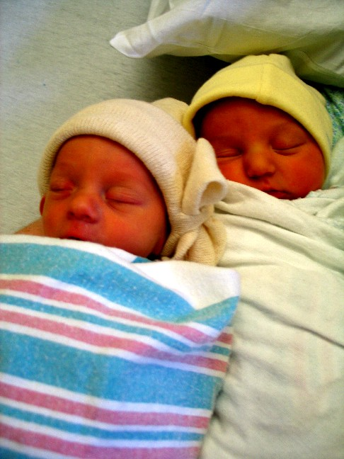
We ferried home in one of the heaviest production cars on the road today.
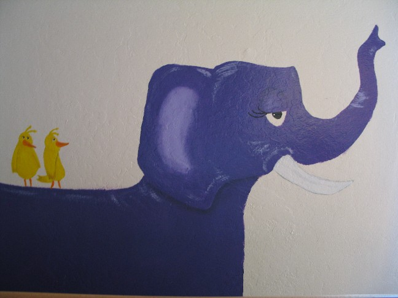
Babes in Da Crib!
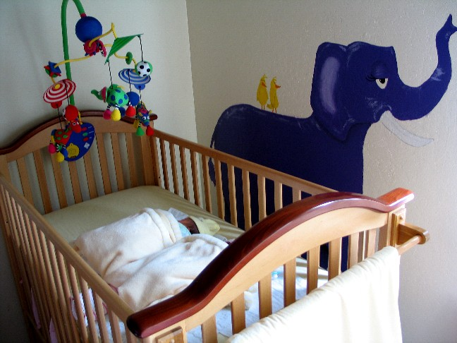
I walked in and noticed that they are starting to do what twins do best, conspire. They can scoot together evidentally. Sophia is whispering to an interested Lucile. "Hey, sister, can you keep a secret?"
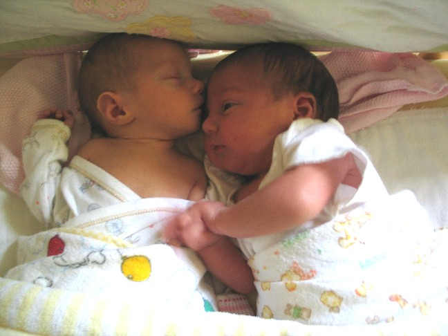
"Hey, I want that hat, I need a hat like yours"
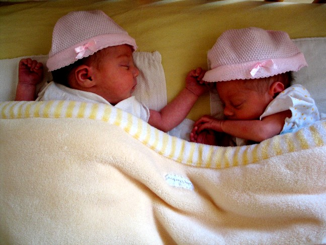
Lucile asleep on Dad, Scooter still trying any way to reclaim her former spot. Helpful reading in the background...
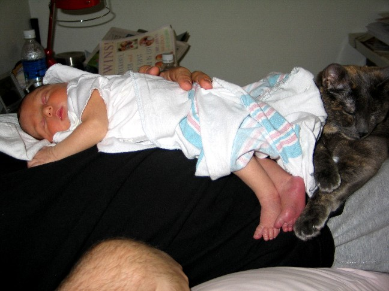
Lucile contemplating what to do with the rest of her life...
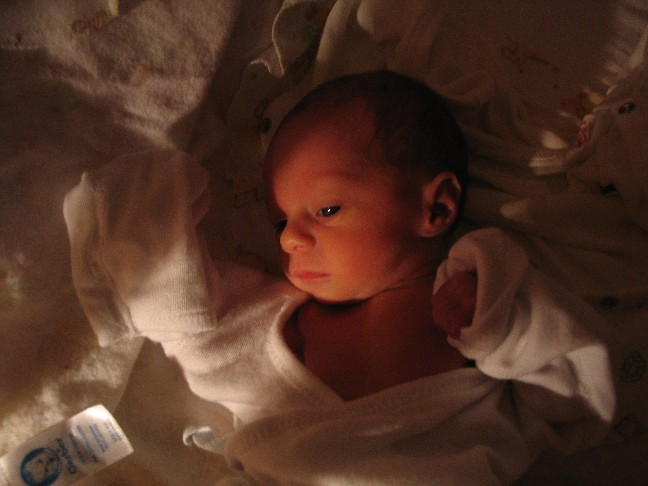
Nightwatch. Beware of the attack cat defending her "kittens."
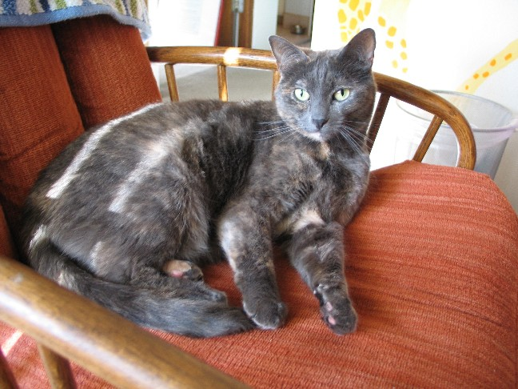
Hey, we're Sophia and Lucy, and boy do we have a show for you today, well, when Sophia wakes up.
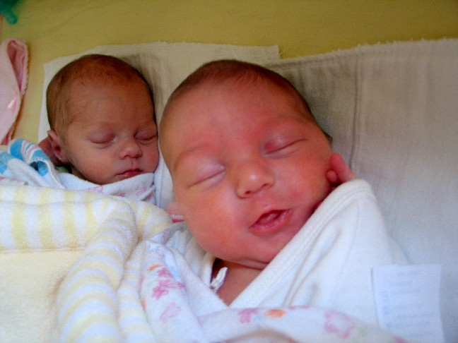
Sohpia's awake!
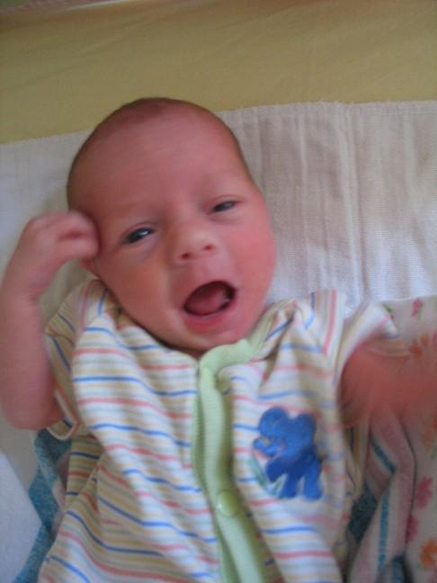
Hang on to Dad. Tiny hands grip tight!
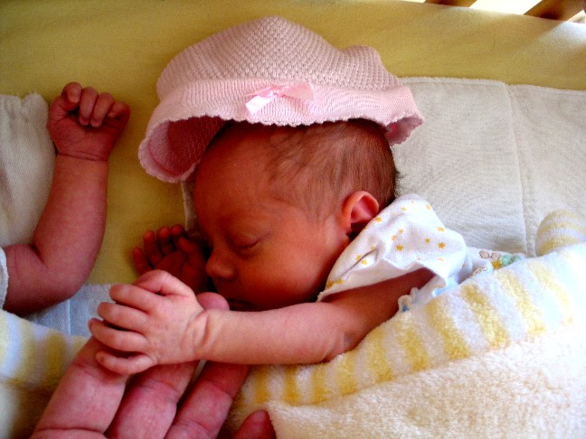